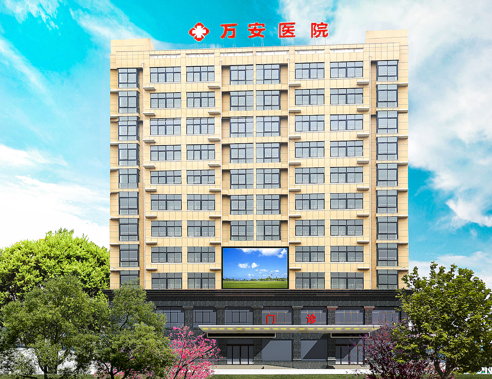
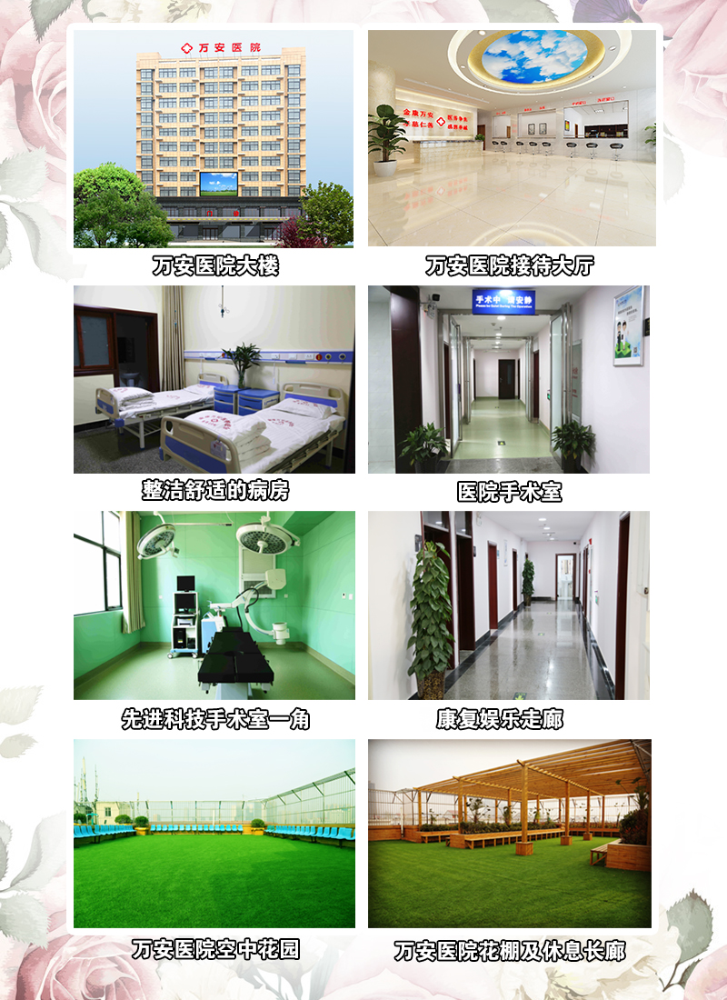

漯河万安康复医院
河南万安康复医院坐落于国家卫生城市·全国首家中国食品名城漯河，交通便利，环境优美。万安康复医院占地总面积3700平方米，
总建筑面积11000平方米，目前设有床位120张，是集医疗、保健、康复、预防、养老为一体的综合性医疗和养老机构，漯河市源汇区城镇职工医疗保险和源汇区、郾城区、召陵区居民医疗定点医院。2011年被漯河市慈善总会、漯河市民政局认定为漯河市第四慈善医院，5A级社会组织、漯河市十佳诚信民营医院。

医院拥有飞利浦16排CT、普利德PLD5600全自动胃肠造影DR一体机、全数字彩色多普勒超声诊断仪、心电工作站、动态心电监护仪、动态血压监护仪、彩超、微波治疗仪、心电监护仪、全自动生化分析仪、美国LEEP刀、数码阴道镜、经颅多普勒血流分析仪、红外乳腺诊断仪、经颅磁治疗仪、HB-JL系列痉挛肌低频治疗仪、空气波压力治疗仪、电动起立床、BE-5000型定定向透药治疗仪、BE-8000型智能数码多功能治疗仪等医疗设备。
漯河万安康复医院自2001年成立以来，一直秉持“救死扶伤 实行社会主义人道主义 时刻为病人着想
千方百计为病人解除病痛”的医德医风开展医疗工作。2015年3月与漯河金康护理院合并之后，实行医养结合的发展模式，多年来，漯河万安康复医院在原来的基础上不断深化改革，增添各种先进医疗设备，优化医疗卫生环境；聘请国家级厨师，打造舒适美味的餐厅；斥资三十万元，建设空中花园；添置各种康复器材，促进患者康复。

医保定点 透明平价收费 拒绝看病难
万安康复医院是【医保、新农合定点单位】，根据患者实际情况，医保报销比例最高可达95%。
生命所系 健康相托 以责任铸就品质
万安康复医院一直将“为人民服务”作为行动宗旨，在漯河地区开展了各种“医疗救助”“天使减贫”“公益体检”等公益活动。带头践行医院社会责任，得到媒体及社会的的高度重视，2011年被漯河市慈善总会、漯河市民政局认定为漯河市第四慈善医院，5A级社会组织、漯河市十佳诚信医院。